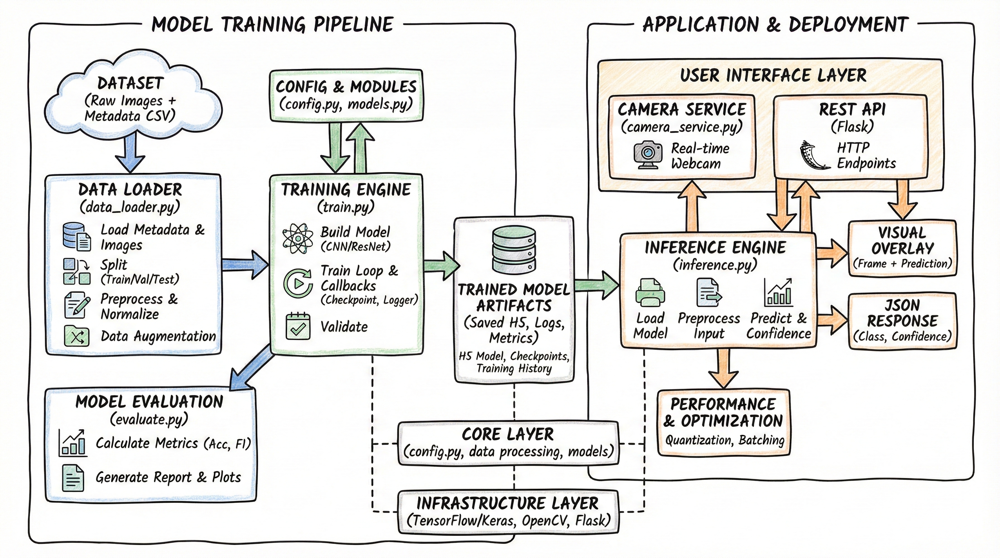

Skin Cancer Detection
Project Overview
This is a production-grade deep learning system for automated skin lesion classification. It uses the HAM10000 dataset to train custom CNN and ResNet architectures that classify dermoscopic images into seven types of skin lesions. The system covers the full ML lifecycle: data loading and augmentation, model training with checkpointing, comprehensive evaluation, single-image and batch inference, a real-time camera service, and a REST API.

The project follows a modular design where each component has a single, well-defined responsibility. All hyperparameters are centralized in a single config file, training runs are logged with timestamps and configurations, and the system includes proper error handling and resource management throughout.
Why I Built This
Skin cancer is one of the most common cancers worldwide, and early detection dramatically improves treatment outcomes. I wanted to build a complete, end-to-end deep learning system that goes beyond a notebook experiment - something that could actually be deployed as a tool for preliminary screening.
This project also gave me a reason to implement custom CNN architectures from scratch, work with medical imaging data, build proper training and evaluation pipelines, and package everything with a camera service and REST API for real-world inference. It is designed to be extensible so that more advanced architectures like EfficientNet or Vision Transformers can be plugged in with minimal changes.
The Problem
Classifying skin lesions from dermoscopic images is challenging even for trained dermatologists. The seven lesion types in the HAM10000 dataset have significant visual overlap, and the dataset is heavily imbalanced with melanocytic nevi dominating the distribution.
This project tackles the problem by:
- Building custom CNN architectures that avoid dense layers entirely, using 1x1 convolutions to preserve spatial information
- Implementing a custom ResNet with skip connections and L2 regularization for better generalization
- Applying data augmentation (rotation, zoom, shifts, flips) to handle the class imbalance
- Providing a modular pipeline that makes it easy to swap in transfer learning models for higher accuracy
- Including deployment options: real-time camera feed, REST API, and batch processing
System Architecture

Key Features
Custom CNN Architecture
Sequential CNN with ~1.2M parameters. Uses 1x1 and kernel-sized convolutions instead of dense layers, progressive filter growth (32→256), and batch normalization throughout.
Custom ResNet
Residual network with ~2.5M parameters, skip connections via concatenation, L2 regularization, flexible input sizes, and transition layers with 1x1 convolutions.
Cyclic Learning Rate
Custom Keras callback implementing cyclic LR policy with triangular, triangular2, and exp_range modes to help escape local minima and speed up convergence.
Data Pipeline
Complete data loading with CSV metadata handling, train/val/test splitting, per-channel normalization using training statistics, and real-time augmentation via ImageDataGenerator.
Real-Time Camera Service
Webcam-based live detection at ~5-10 FPS with visual overlays showing class name, confidence, and top-3 predictions. Supports screenshot capture and keyboard controls.
REST API
Flask-based API with health check, file upload, and base64 image endpoints. CORS enabled, JSON responses, and support for multiple image formats.
How It Works
The system is organized into an offline training phase and an online inference phase. Data preprocessing, model training, and evaluation happen offline, while the camera service and REST API handle real-time predictions.
- Data loading: The pipeline reads metadata from a CSV file, handles missing values (fills age with mean), maps image IDs to file paths, and loads images resized to 90×120×3.
- Splitting and normalization: Data is split into train (84%), validation (15%), and test (1%) sets. Images are normalized using the training set's mean (~160.0) and standard deviation (~46.7) for zero-centered, unit-variance inputs.
- Augmentation: During training, ImageDataGenerator applies random rotations (up to 10°), zoom (up to 10%), width/height shifts (up to 10%), and horizontal flips on the fly.
- Training: The model trains with callbacks for checkpointing (best validation accuracy), CSV logging, TensorBoard, learning rate scheduling, and early stopping. All outputs are saved to timestamped log directories.
- Evaluation: The evaluator computes accuracy, precision, recall, F1 score (macro and weighted), generates a confusion matrix, and produces a full classification report for all seven lesion classes.
- Inference: Single images or batches are preprocessed with the same normalization pipeline and fed through the trained model. The output includes the predicted class, confidence score, and full probability distribution.
- Deployment: The camera service runs predictions on live webcam frames, while the Flask API accepts image uploads for integration with web or mobile applications.
Model Architectures
Sequential CNN (~1.2M parameters, ~75% accuracy)
The baseline CNN uses nine convolutional layers organized in three blocks of three, with progressive filter growth from 32 to 256. Each convolution is followed by batch normalization and ReLU. MaxPool and 20% dropout separate the blocks. The key design decision is avoiding dense layers entirely - the final classification uses a 1×1 convolution for channel reduction and a kernel-sized convolution that maps directly to the seven output classes.
Input (90, 120, 3)
│
├── Conv2D(32, 3x3) + BatchNorm + ReLU
├── Conv2D(64, 3x3) + BatchNorm + ReLU
├── Conv2D(64, 3x3) + BatchNorm + ReLU
├── MaxPool(2x2) + Dropout(0.2)
│
├── Conv2D(64, 3x3) + BatchNorm + ReLU
├── Conv2D(128, 3x3) + BatchNorm + ReLU
├── Conv2D(128, 3x3) + BatchNorm + ReLU
├── MaxPool(2x2) + Dropout(0.2)
│
├── Conv2D(128, 3x3) + BatchNorm + ReLU
├── Conv2D(256, 3x3) + BatchNorm + ReLU
├── Conv2D(256, 3x3) + BatchNorm + ReLU
├── MaxPool(2x2) + Dropout(0.2)
│
├── Conv2D(7, 1x1) + BatchNorm + ReLU
├── Conv2D(7, 6x9)
├── Flatten
└── Softmax → Output (7 classes)Custom ResNet (~2.5M parameters, ~71% accuracy)
The ResNet variant uses residual blocks where the input is concatenated with the processed output (skip connections). Each block has two Conv+BN+ReLU layers, and a 1×1 transition convolution reduces channels after concatenation. L2 regularization (0.001) is applied to all convolutional layers. The network ends with GlobalAveragePooling2D, which allows flexible input sizes.
Input (flexible size, default 90x120x3)
│
├── Conv2D(32, 3x3) + BatchNorm + ReLU
│
├── ResBlock 1 (32 → 64 filters) + MaxPool
├── ResBlock 2 (64 → 128 filters) + MaxPool
├── ResBlock 3 (128 → 256 filters) + MaxPool
├── ResBlock 4 (256 → 512 filters, no pool)
│
├── Conv2D(7, 1x1) [channel reduction]
├── GlobalAveragePooling2D
└── Softmax → Output (7 classes)
ResBlock Structure:
Input ──────────────────────┐
│ │
├── Conv2D + BN + ReLU │
├── Conv2D + BN + ReLU │
│ │
└── Concatenate ──────────┘
│
├── Conv2D(1x1) [transition]
├── BatchNorm + ReLU
└── MaxPool (except final block)Core Code Snippets
Data preprocessing and normalization
Images are normalized using training set statistics so the model sees zero-centered, unit-variance inputs. This normalization must be applied consistently at both training and inference time.
# Compute training set statistics
train_mean = X_train.mean() # ≈ 160.0
train_std = X_train.std() # ≈ 46.7
# Normalize all splits using training statistics
X_train = (X_train - train_mean) / train_std
X_val = (X_val - train_mean) / train_std
X_test = (X_test - train_mean) / train_std
# Convert labels to one-hot encoding
y_train = to_categorical(y_train, num_classes=7)
y_val = to_categorical(y_val, num_classes=7)
y_test = to_categorical(y_test, num_classes=7)Cyclic learning rate callback
The cyclic LR oscillates between a base and max learning rate, helping the optimizer escape local minima. The ResNet model uses this with a triangular policy cycling between 0.001 and 0.1.
class CyclicLR(Callback):
def __init__(self, base_lr=0.001, max_lr=0.1,
step_size=2000, mode='triangular'):
self.base_lr = base_lr
self.max_lr = max_lr
self.step_size = step_size
self.mode = mode
def on_batch_begin(self, batch, logs=None):
cycle = np.floor(1 + self.iterations / (2 * self.step_size))
x = np.abs(self.iterations / self.step_size - 2 * cycle + 1)
lr = self.base_lr + (self.max_lr - self.base_lr) * max(0, 1 - x)
K.set_value(self.model.optimizer.lr, lr)Inference prediction output
The predictor returns structured results including the predicted class, confidence, and the full probability distribution across all seven lesion types.
result = predictor.predict(image)
# Output format:
{
'class_code': 'nv',
'class_name': 'Melanocytic nevi',
'class_index': 5,
'confidence': 0.856,
'all_probabilities': {
'Melanocytic nevi': 0.856,
'Melanoma': 0.089,
'Benign keratosis-like lesions': 0.032,
'Basal cell carcinoma': 0.012,
...
}
}REST API usage
The Flask API accepts image uploads and returns predictions in JSON format. It supports both multipart file upload and base64-encoded images.
import requests
with open('lesion.jpg', 'rb') as f:
response = requests.post(
'http://localhost:5000/predict',
files={'image': f}
)
result = response.json()
print(f"Predicted: {result['class_name']}")
print(f"Confidence: {result['confidence']:.2%}")Tech Stack
Deep Learning
Backend & API
Data & Training
Deployment
Evaluation & Metrics
The evaluation pipeline computes per-class and aggregate metrics across all seven lesion types. The Sequential CNN achieves ~75% test accuracy and the Custom ResNet ~71%, which are reasonable baselines for training from scratch on a relatively small dataset (10K images) at reduced resolution (90×120).
~75%
Sequential CNN Accuracy
~71%
Custom ResNet Accuracy
7
Lesion Classes
10K+
Training Images
The evaluation module generates confusion matrices, per-class precision/recall/F1, and class distribution comparisons. The seven classes are: Actinic keratoses, Basal cell carcinoma, Benign keratosis-like lesions, Dermatofibroma, Melanoma, Melanocytic nevi, and Vascular lesions.
Model Comparison
Deployment Options
Camera Service
Real-time webcam inference with visual overlays. Runs at ~5-10 FPS, shows top-3 predictions, supports screenshot saving and keyboard controls.
python src/camera_service.py \
--model models/sequential_best.h5 \
--mode cameraREST API
Flask API with /predict and /predict_base64 endpoints. CORS enabled, JSON responses, supports multiple image formats.
python src/camera_service.py \
--model models/sequential_best.h5 \
--mode api --port 5000Batch Processing
Process large datasets offline using the SkinCancerPredictor class. Supports single image, batch prediction, and top-K results.
predictor = SkinCancerPredictor(
'models/sequential_best.h5')
results = predictor.predict_batch(
image_list)Design Decisions
No dense layers in the Sequential CNN
Instead of flattening feature maps into a dense layer (which discards spatial structure and adds
millions of parameters), the model uses 1×1 convolutions for channel reduction and a final
convolution with a kernel matching the remaining spatial dimensions. This keeps the parameter
count low and preserves spatial information until the very last layer.
Concatenation-based skip connections
The custom ResNet uses concatenation instead of addition for skip connections. This gives
subsequent layers access to both the original and processed features, at the cost of requiring
a 1×1 transition convolution to reduce channel count. It is a deliberate trade-off for richer
feature reuse in a shallow network.
Training set normalization
All data splits are normalized using the training set's mean and standard deviation, not their
own statistics. This prevents information leakage and ensures the model sees the same data
distribution at training, validation, and inference time.
Modular architecture for extensibility
The system is explicitly designed to make it easy to plug in transfer learning models
(EfficientNet, Vision Transformers, DenseNet) for significantly higher accuracy. The baseline
models are educational starting points; the architecture supports production-grade models with
minimal changes.
My Contribution
I designed and built this project end to end:
- Designed the Sequential CNN and custom ResNet architectures with specific trade-offs for this problem domain
- Built the complete data pipeline: CSV metadata loading, image preprocessing, normalization, augmentation, and train/val/test splitting
- Implemented the training pipeline with callbacks for checkpointing, logging, TensorBoard, learning rate scheduling, and early stopping
- Created the evaluation module with per-class metrics, confusion matrix visualization, and classification reports
- Built the inference system supporting single image, batch, and top-K predictions
- Developed the real-time camera service with visual overlays and the Flask REST API
- Wrote the custom CyclicLR callback implementing triangular, triangular2, and exp_range policies
Challenges & Learnings
Class imbalance in the HAM10000 dataset
Melanocytic nevi dominates the dataset, making up over 60% of all samples. Without augmentation
and careful evaluation (per-class metrics, not just overall accuracy), the model can learn to
predict the majority class and still report deceptively high accuracy. Monitoring recall on
minority classes like dermatofibroma and vascular lesions was critical.
Consistent preprocessing across training and inference
The normalization step uses training set statistics (mean ≈ 160.0, std ≈ 46.7). Getting this
wrong at inference time - for example, normalizing with the test set's own statistics -
silently degrades predictions without an obvious error. I made sure the same preprocessing
path is shared between the training pipeline and the inference module.
Choosing between dense and fully-convolutional heads
Early experiments with a traditional flatten + dense layer approach worked but added millions
of parameters. Switching to a fully-convolutional classification head (1×1 reduction +
kernel-sized final convolution) reduced the parameter count significantly while maintaining
comparable accuracy.
Cyclic learning rate tuning
The cyclic LR bounds (0.001 to 0.1) required careful tuning. Too high a max_lr caused
training instability, while too low eliminated the benefit of cycling. The step size needs to
match the number of iterations per epoch for meaningful exploration of the loss landscape.
Future Improvements
- Integrate transfer learning models (EfficientNet, DenseNet, ResNet50) with two-stage training for 85-90%+ accuracy
- Increase input resolution from 90×120 to 224×224 to capture finer-grained lesion features
- Add class weighting or oversampling to better handle the imbalanced class distribution
- Implement test-time augmentation for more robust predictions on new images
- Add model quantization and TFLite conversion for mobile deployment
- Build a Gradio or Streamlit demo for easier public access without API setup
- Implement ensemble methods combining multiple architectures for production use
Closing Note
This project is fully open source and was built as both a learning exercise and a practical demonstration of medical image classification. The baseline models are intentionally simple - they are meant as starting points that clearly show how custom architectures work, with a modular design that makes it straightforward to swap in more powerful models.
If you are interested in medical AI, deep learning architectures, or building end-to-end ML systems with proper evaluation and deployment, this codebase covers the full pipeline from raw data to a running API. Feel free to use it, extend it, or build on top of it.